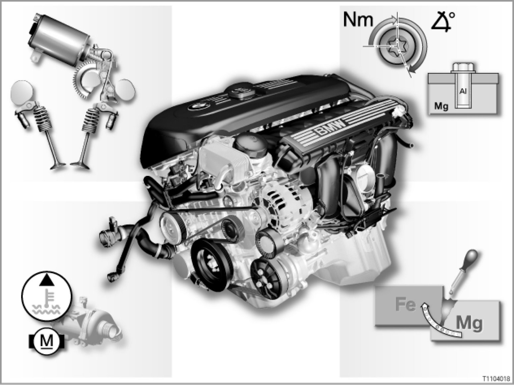

11 03 04 (085) N52 Engine
11 03 04 (085)
N52 engine
E60, E61, E63, E64, E65, E66, E70, E81, E82, E83, E85, E86, E87, E90, E91, E92, E93

Introduction
The new 6-cylinder N52 spark-ignition engine represents the start of a new generation of engine at BMW. Consistent lightweight construction methods and the development of other innovations have created an outstanding engine.
The N52 engine will be introduced with the MSV70 engine management in the following model series:
- E60, E61, E63, E64
- E65, E66
- E85, E86
- E87
- E90, E91
MSV80 engine management is introduced with the introduction of the slightly modified N52 engine.
On the modified engine, there is, for example, no coolant temperature sensor on the radiator outlet. Depending on the model series and engine version concerned, the active air flap control system is used.
The 4th generation electronic immobilizer (EWS) is also introduced with the MSV80. The 4th generation EWS is an advanced development of the previous electronic immobilizer. This advanced development uses a new and modern encoding method.
The modified N52 engine with engine management MSV80 supersedes the previous engine with engine management MSV70 and is installed in the following model series:
- E60, E61, E63, E64
- E70
- E83
- E81, E82, E87
- E90, E91, E92, E93
[System overview]
Brief description of components
- Crankcase made of magnesium-aluminium composite
The crankcase consists of an aluminium-silicon insert, inseparably and seamlessly cast in with a magnesium alloy.
- innovative valve gear Valvetronic
The Valvetronic consists of fully variable control of the valve lift combined with the variable camshaft control unit
[more]
- Volume-flow-regulated oil pump
The new volume-flow-regulated oil pump delivers exactly the oil volume that is actually required.
- Electrical coolant pump
The coolant pump driven by an electric motor is regulated irrespective of the engine speed.
- Three-phase differential air intake control
The three-phase differential air intake control (DISA) ensures even cylinder fill levels
- Oil condition sensor
For the N52 engine, the dipstick and its guide pipe are eliminated.
The N52 engine has an oil condition sensor.
- DME: Digital engine electronics
The digital engine electronics control and regulate the engine functions.
- Cylinder head cover made of magnesium
- Switchover to single-belt drive
- Highly temperature-resistant exhaust manifold
System functions
The following system functions are described:
- Volume-flow-regulated oil supply
- Oil level check, engine oil quality check and engine oil temperature check
- Valvetronic
- Heat management
- Active air flap control
Volume-flow-regulated oil supply
The N52 has a volume-flow-regulated oil pump. This pump only delivers as much oil as each operating range of the engine requires. A conventional oil pump would have to be approximately three times the size of that in the N52 engine. This oil pump would also require more driving power accordingly.
No superfluous oil is supplied for ranges with a smaller load. The fuel consumption of the engine is reduced and wear to the oil is slowed down. A pendulum slide cell pump is used. The pump shaft is located off-center in the housing during pump activation. The impeller shifts radially during rotation. This means that the chambers on the impeller form different volumes. The oil is taken into the enlarging volume. The oil is pumped into the oil ducts at the reducing volume.
Oil level check, engine oil quality check and engine oil temperature check
The oil level is measured by the oil condition sensor and shown in the Central Information Display (CID). This protects the engine from excessively low oil level and the associated engine damage. Excessive oil filling of the engine, which can lead to leaks, is displayed as a check control message.
The oil condition sensor also registers the engine oil quality. This means that the system is able to compute exactly when it is necessary to change the engine oil. Condition Based Service (CBS) allows the engine oil to be changed in line with needs.
The engine oil temperature is also detected or calculated by the oil condition sensor. The signal from the oil condition sensor is evaluated in the DME. The evaluated signal is routed via the PT-CAN and K-CAN bus to the instrument cluster and to the CID.
Valvetronic
The Valvetronic consists of fully variable control of the valve lift combined with the variable camshaft control unit (VANOS).
The valve lift is only regulated on the inlet side, but the camshaft is also adjusted on the exhaust side. Valvetronic is controlled by:
- a variable valve lift of the inlet valve
- a variable opening duration of the inlet valve
- a variable camshaft control of the inlet and exhaust camshaft
(double VANOS)
The system is optimized by adapting the valve gear, changing the actuator motor and varying the camshaft timing control. Major innovations are:
- On the intermediate lever, the plain bearing to the eccentric shaft has been replaced by a roller bearing. This reduces the friction in the valve gear.
- The guide of the intermediate lever is more precise. Only one spring is required to guide and retain the intermediate lever.
- The moved mass of the valve gear has been reduced by 13%.
- The range of motion of the inlet valves has been improved. The maximum lift has risen to 9.9 mm, but above all the minimum lift has been further reduced to 0.18 mm.
Heat management
The possibilities of conventional cooling systems are used for the cooling system with electrical coolant pump.
The following components are influenced by the heat management:
- Electrical coolant pump
- Mapped thermostat
- Digital engine electronics (DME)
The cooling output of the system is adapted by means of a freely variable volumetric flow of the coolant.
The heat management determines the current cooling requirement and regulates the cooling system accordingly. If necessary, the coolant pump can even be switched off altogether, for example to heat up the coolant quickly during the warm-up phase.
If the engine is not running but very hot, the coolant pump will also work while the vehicle is out of use. Cooling output can thus be called up regardless of engine speed.
The heat management now permits various characteristic maps to be used as a basis for controlling the coolant pump, over and above the map thermostat. In this way, the engine control unit can adapt the engine temperature to the driving characteristics.
The engine control unit regulates the following temperature ranges:
- 112 °C = Economy
- 105 °C = Normal
- 95 °C = High
- 80 °C = High and regulation by the map thermostat
If the vehicle handling causes the engine control unit to detect the economical operating range Economy, the DME regulates to a higher temperature (112 C).
In this temperature range, the engine is operated with a relatively fuel requirement. The friction inside the engine is reduced at higher temperature. The temperature increase thus favors lower fuel consumption in the low load range.
In the High and regulation by the map thermostat mode, the driver wants to use optimized power output development of the engine. To achieve this, the temperature in the cylinder head is lowered to 80°C. This lowering leads to a better cylinder filling, which leads in turn to an increase in engine torque. The engine control unit can now regulate a certain operating range, adapted to the relevant driving situation. This makes it possible to use the cooling system to influence consumption and performance.
Active air flap control
Active air flap control regulates the air supply for the engine and assemblies cooling system by only opening the air flaps as they are needed.
Notes for service staff
Service staff should note the following points:
- General notes:
- Diagnosis: ---
- Encoding/programming: ---
Subject to change.